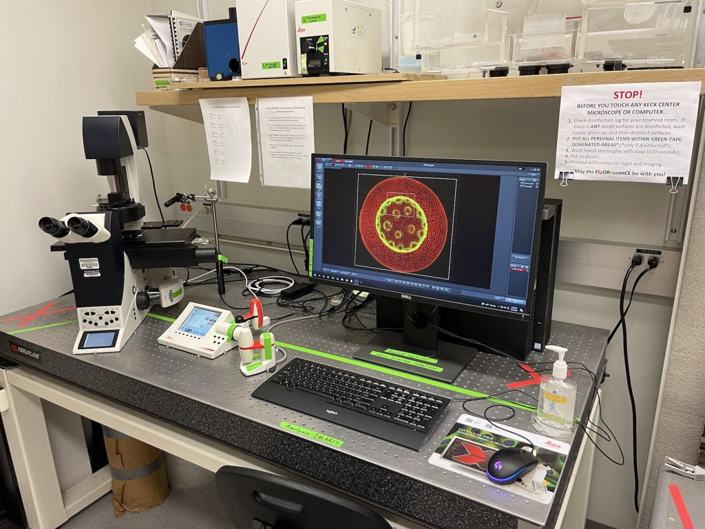

Welcome to the W. M. Keck Microscopy Center
This is an update on the operations and administration of the UW Keck Imaging Center, located in K507. Brian Beliveau, PhD, Associate Professor in Genome Sciences, and Winnie Wang, PhD, MBA, Imaging Scientist at NBIO, manage the Center, including providing training and user support for research projects conducted by Center users.
About Our Facility
The W. M. Keck Microscopy Center provides light microscopy and image analysis services to the University of Washington (UW) research community. We operate as a UW recharge center, supported by the departments of Physiology and Biophysics, Pharmacology, Genome Sciences, and Laboratory Medicine & Pathology.
🔬 Our Equipment
Access cutting-edge microscopy systems and analysis software:

Leica SP8X Confocal
Advanced confocal imaging with Lightning deconvolution for high-resolution 3D imaging and Z-stack acquisition

Leica Widefield
Multi-dimensional widefield microscopy for real-time live cell imaging with motorized stages

Zeiss 880 Confocal
Advanced confocal microscope with exceptional optical sectioning and multi-channel imaging capabilities

IMARIS Analysis
Professional 3D visualization and image analysis software. FREE for UW students
🌡️ Environmental Control
Pecon stage incubator and Warner 35mm dish incubator for long-term live cell imaging
👥 Meet Our Team
Experienced professionals dedicated to supporting your research:
Brian Beliveau, PhD
Associate Professor in Genome Sciences. Leads the Keck Center with expertise in advanced microscopy and image analysis.
Winnie Wang, PhD, MBA
Expert in image analysis and facility operations. Provides training and support for all microscopy systems.
❓ Frequently Asked Questions
How do I book microscope time?
Click "Book Now" on the equipment card, log in with your UW ID, and select your preferred time slot from the calendar.
Is IMARIS free for students?
Yes! IMARIS is completely FREE for UW students. Non-students may use it at our standard Image Analysis rate.
Do I need training to use the microscopes?
Yes, all users must be trained by our team. Contact us at uwkeckcenter@uw.edu to schedule your training session.
What publications mention the Keck Center?
Publications using the Leica SP8X must acknowledge NIH grant S10 OD016240. See our equipment page for more details.
📧 Get in Touch
Questions about our equipment or services? We're here to help!
Email: uwkeckcenter@uw.edu
Location: Room K507, University of Washington
Hours: Monday - Friday, 9 AM - 5 PM